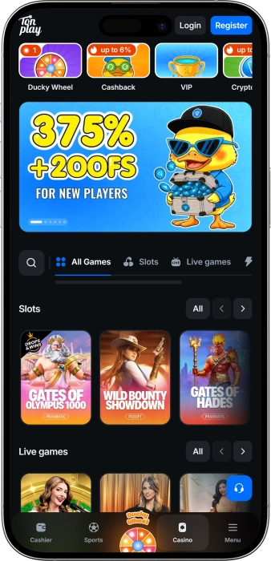
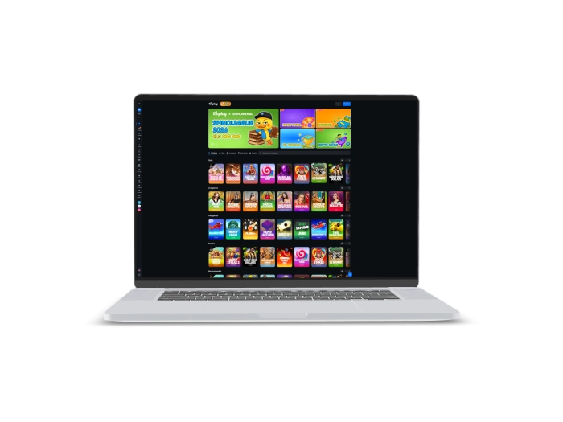

Offre de bienvenue exclusive de
Offre de bienvenue exclusive de
Tonplay — casino en ligne avec TON, machines à sous, live casino et paris sportifs
Top casinos
Détails du bonus
Casino
Bonus
Note
Tours gratuits
Plus d'infos
Obtenir
Avantages
- Chez Tonplay Casino, nous réunissons casino en ligne, paiements numériques et paris sportifs dans un espace fluide et moderne.
-
Paiements en TON et cryptomonnaies
-
Cashback jusqu’à 6% disponible
-
Bonus crypto jusqu’à 7%
-
Assistance disponible 24h/24 et 7j/7
-
Machines à sous et jeux live
-
Sport, live betting et esport
-
Plus de 20 options crypto
- Notre approche met l’accent sur une expérience claire, une caisse accessible, des jeux variés et une assistance disponible à tout moment. L’univers Tonplay inclut les jeux de casino, le live casino, les paris sportifs, l’esport, les tournois, le programme VIP, le cashback et les bonus crypto.
Tonplay App



About Tonplay
Tonplay Casino se distingue par une combinaison de casino, live casino, jeux rapides et paris sportifs depuis un seul compte. Nous privilégions aussi les paiements crypto, l’assistance continue et une organisation claire des offres promotionnelles.
- Cashback jusqu’à 6%.
- Bonus crypto jusqu’à 7%.
- 20+ cryptomonnaies disponibles.
Tonplay Casino réunit le casino en ligne, le live casino, les jeux rapides, les paris sportifs et l’esport dans une même interface. Notre plateforme s’appuie sur une expérience moderne, avec une attention particulière portée aux paiements en TON et en cryptomonnaies. Nous avons conçu une navigation simple afin que chaque section soit accessible rapidement : machines à sous, tables live, tournois, bonus ou caisse. L’espace casino inclut des slots populaires, des nouveautés, des recommandations et des jeux rapides au rythme plus dynamique.

Le live casino comprend la roulette, le blackjack, le baccarat, des game shows et plusieurs tables animées par des croupiers en direct. Pour les amateurs de paris, nous intégrons une ligne sportive, des événements live et une section esport. Cette organisation permet de passer d’un type de divertissement à l’autre sans changer d’environnement. Notre système promotionnel s’articule autour du cashback, du programme VIP, du bonus crypto et d’offres ponctuelles. Le cashback jusqu’à 6% apporte une mécanique claire pour les utilisateurs réguliers. Le bonus crypto jusqu’à 7% s’adresse aux joueurs qui privilégient les transactions numériques. Le programme VIP peut inclure des avantages personnalisés, une attention renforcée du service client et des conditions adaptées au profil d’activité. Les tournois peuvent proposer des classements, des points et une distribution de prix selon les règles de chaque événement. Ducky Wheel ajoute une dimension plus ludique à l’espace promotionnel. La caisse Tonplay Casino prend en charge plus de 20 cryptomonnaies et plus de 10 solutions fiat. L’assistance 24h/24 et 7j/7 accompagne les questions liées au compte, aux paiements, aux bonus, à la vérification ou aux aspects techniques. Les règles couvrent aussi le jeu responsable, l’auto-limitation, la confidentialité, la vérification KYC et l’équité du jeu. Cette structure rend l’expérience plus lisible et plus encadrée. Nous nous adressons aux utilisateurs qui recherchent une interface fluide, une grande variété de jeux et une approche moderne des paiements. Tonplay Casino combine ainsi divertissement, paris et crypto-paiements dans un même écosystème.
Tonplay: your comfort — rules, security, support
Tonplay Casino — règles d’accès et jeu responsable
Chez Tonplay Casino, les règles d’accès permettent de maintenir un environnement clair, sécurisé et équitable pour chaque utilisateur. L’accès au compte est réservé aux personnes âgées de 18 ans et plus. Lors de l’inscription, les informations fournies doivent être exactes, car elles peuvent servir à vérifier l’identité, l’âge et la sécurité des transactions. Chaque utilisateur doit utiliser uniquement son propre compte et ses propres moyens de paiement. Avant de participer à un jeu ou d’activer une promotion, il est important de consulter les conditions propres à l’offre, les limites de mise, les exigences de mise et les délais applicables. Nous pouvons demander une vérification KYC lorsque cela est nécessaire pour protéger le compte, traiter un retrait, respecter les règles ou prévenir les abus. Les comptes multiples, le partage de compte, l’utilisation de moyens de paiement appartenant à une autre personne et les tentatives de contournement technique ne sont pas autorisés. Toute action frauduleuse, exploitation d’erreur, collusion ou utilisation abusive d’un bonus peut entraîner un contrôle supplémentaire, l’annulation d’un avantage ou la restriction du compte. Les soldes réels, les soldes bonus et les gains doivent être utilisés conformément aux conditions publiées. Lorsqu’un bonus prévoit des restrictions de jeux ou de mise maximale, ces règles s’appliquent jusqu’à la fin du wagering. Le jeu responsable fait partie intégrante de notre fonctionnement. Nous considérons les jeux d’argent comme une forme de divertissement, et non comme une source régulière de revenus. Les utilisateurs peuvent définir des limites, prendre une pause, demander une auto-limitation ou utiliser d’autres outils de contrôle. Il est essentiel de fixer un budget adapté et de ne pas le dépasser. En cas de perte de contrôle, une interruption immédiate et l’utilisation des outils de restriction sont recommandées. Notre assistance peut accompagner les demandes liées aux limites, à l’auto-exclusion et à la sécurité du compte.
Conditions d’accès
- • 18 ans et plus — l’accès est réservé aux utilisateurs majeurs.
- • Données exactes — les informations du compte doivent être correctes.
- • Compte personnel — le profil ne doit pas être partagé.
- • Moyens de paiement propres — les transactions doivent être personnelles.
Actions interdites
- • Comptes multiples — un utilisateur ne doit pas créer plusieurs profils.
- • Abus de bonus — les promotions doivent respecter leurs conditions.
- • Contournement technique — toute manipulation de la plateforme est interdite.
- • Fraude — les tentatives de tromperie peuvent entraîner une restriction du compte.
Jeu responsable
- • Limites — elles aident à contrôler le budget et le temps de jeu.
- • Pause — une interruption temporaire limite les décisions impulsives.
- • Auto-exclusion — elle permet de suspendre l’accès au compte.
- • Assistance — notre équipe accompagne les demandes liées à la sécurité.
Tonplay Casino — licence, protection des données et confidentialité
Tonplay Casino fonctionne comme une plateforme en ligne licenciée, avec une attention particulière portée aux règles, à la sécurité du compte et à la protection des données personnelles. TonPlay.com est exploité par Galaxy Byte Lab Sociedad de Responsabilidad Limitada, société enregistrée au Costa Rica. Les informations officielles indiquent également une licence délivrée par le Gouvernement de l’île autonome d’Anjouan, Union des Comores, sous le numéro ALSI-202508040-FI2. Cette structure signifie que les jeux de hasard et les paris sont proposés dans le cadre de l’autorisation réglementaire déclarée.
La protection des données chez Tonplay Casino repose sur la confidentialité, le contrôle d’accès et la vérification des opérations. Nous utilisons des procédures destinées à séparer les informations personnelles de l’environnement de jeu visible. L’accès au compte doit rester strictement personnel, et les identifiants ne doivent pas être partagés. En cas d’activité inhabituelle, des vérifications complémentaires peuvent être appliquées afin de protéger le compte et les transactions.
Le chiffrement joue un rôle essentiel dans la transmission des informations entre l’utilisateur, son compte et les outils de paiement. Les opérations financières doivent être traitées par des canaux sécurisés afin de limiter les risques d’interception. Pour les transactions en cryptomonnaies, la précision de l’adresse, le choix du réseau et les confirmations blockchain sont également essentiels. Une transaction crypto étant généralement irréversible, chaque détail doit être vérifié avant validation.
La politique de confidentialité encadre les données pouvant être collectées, leur finalité et les situations dans lesquelles des contrôles supplémentaires peuvent être nécessaires. Ces données peuvent inclure les informations d’inscription, les informations de paiement, l’historique des opérations, les données techniques de l’appareil et les échanges avec l’assistance. Leur traitement sert à gérer le compte, appliquer les règles, prévenir la fraude, effectuer les contrôles KYC et protéger l’intégrité du jeu.
La politique KYC permet de confirmer l’identité, l’âge, la propriété du moyen de paiement et la cohérence des opérations. Une vérification peut être demandée avant un retrait, lors d’une modification des informations de paiement, pour une opération importante ou en cas d’incohérence. Cette procédure protège à la fois l’utilisateur et la plateforme contre l’accès non autorisé, le blanchiment, les comptes multiples et l’abus de bonus.
Points de sécurité
- • Licence — Tonplay Casino indique une autorisation réglementaire sous le numéro ALSI-202508040-FI2.
- • Confidentialité — les données personnelles sont traitées selon leur finalité opérationnelle.
- • Chiffrement — les échanges sensibles doivent passer par des canaux sécurisés.
- • KYC — la vérification protège les retraits, le compte et les moyens de paiement.
- • Compte personnel — les identifiants ne doivent jamais être partagés.
Tonplay Casino — dépôts, retraits et sécurité des paiements
Chez Tonplay Casino, la caisse prend en charge des scénarios de paiement en cryptomonnaies et en monnaies fiat. Nous mettons l’accent sur TON et les actifs numériques, tout en conservant des options fiat visibles directement dans la caisse du compte. La plateforme indique plus de 20 cryptomonnaies et plus de 10 moyens de paiement fiat. Un dépôt est généralement traité plus rapidement qu’un retrait, car il ne nécessite pas toujours une vérification manuelle. Les paiements crypto dépendent du réseau choisi, des frais et du nombre de confirmations blockchain. Les paiements fiat dépendent de la banque, du prestataire, de la devise et des contrôles internes. Un retrait peut demander une vérification d’identité, notamment lors d’un premier paiement, d’un changement de méthode, d’un montant important ou d’une incohérence de données. Nous appliquons des procédures de contrôle pour protéger le compte, limiter les erreurs et prévenir les opérations frauduleuses. Avant tout retrait, il est important de vérifier que les bonus actifs sont terminés et que les conditions de wagering sont remplies. Si les exigences d’un bonus ne sont pas finalisées, le montant disponible au retrait peut différer du solde total. Les retraits crypto sont souvent plus rapides après approbation, mais le délai dépend du réseau et de sa charge. Les cartes bancaires et les virements peuvent nécessiter plus de temps en raison du traitement par les organismes financiers. Les limites, frais, devises et méthodes disponibles sont affichés dans la caisse. Pour la sécurité, l’adresse du portefeuille, le réseau, le nom du titulaire et le montant doivent être vérifiés avec attention. L’utilisation de moyens de paiement appartenant à une autre personne peut entraîner une vérification ou un refus. En cas de question, notre assistance 24h/24 et 7j/7 peut aider à clarifier le statut d’une opération.
| Method | Deposit speed | Payout after approval |
|---|---|---|
| TON | Fast | From minutes |
| USDT | Fast | From minutes |
| BTC | Network confirmations | 15 min to hours |
| ETH | Network confirmations | 15 min to hours |
| Bank card | Usually fast | 1–5 business days |
| E-wallet | Usually fast | Minutes to 24h |
| Bank transfer | Up to 1 day | 1–5 business days |
Limites de retrait
- • Retrait minimum — généralement à partir de €20, selon la méthode affichée dans la caisse.
- • Limite quotidienne — environ €5 000 pour un compte vérifié standard.
- • Limite mensuelle — environ €20 000 pour un compte standard.
- • Limites VIP — montants plus élevés possibles selon le niveau et la vérification.
- • Limites crypto — elles dépendent du réseau, de la devise et du statut du compte.
Tonplay Casino — assistance client et qualité de service
Chez Tonplay Casino, l’assistance fait partie intégrante de l’expérience utilisateur. Nous privilégions des réponses claires, une orientation pratique et une aide adaptée aux questions liées au compte, aux paiements, aux bonus et aux aspects techniques. Le support est disponible 24h/24 et 7j/7, ce qui permet d’obtenir une assistance à tout moment. La plateforme distingue l’assistance technique et le service de sécurité. Cette organisation permet de séparer les demandes courantes de navigation des questions plus sensibles concernant l’accès au compte, la vérification ou les transactions. Le canal principal est le chat en ligne, adapté aux demandes rapides sur la caisse, les jeux, les bonus et l’interface. L’email convient mieux aux dossiers détaillés, aux documents et aux situations nécessitant un suivi écrit. Le téléphone peut ne pas être disponible dans tous les cas, et les canaux réellement actifs doivent être vérifiés depuis le compte. Le temps de réponse dépend de la charge de l’équipe et de la complexité de la demande. Les questions simples sont généralement traitées plus vite que les demandes KYC, les retraits ou les contrôles de sécurité. Nous cherchons à expliquer non seulement la décision, mais aussi sa raison. Lorsqu’un paiement est en attente, l’utilisateur doit comprendre s’il s’agit d’une vérification, d’une confirmation réseau, d’un traitement bancaire ou d’une information manquante. Lorsqu’un bonus ne s’active pas, les conditions, la devise, la mise, la durée et les restrictions doivent être clarifiées. En cas de problème technique, l’assistance peut demander le nom du jeu, l’heure de la session, l’appareil utilisé et une capture d’écran. Tonplay Casino s’adresse à un public international, et la disponibilité linguistique reste donc importante. L’interface et l’assistance peuvent inclure plusieurs langues, selon la version actuelle de la plateforme. Nous accordons aussi une attention particulière à la sécurité des échanges : les mots de passe, phrases seed, clés privées et accès au portefeuille ne doivent jamais être partagés.
Canaux de contact
- • Chat en ligne — réponses rapides sur le compte, la caisse et les jeux.
- • Email — demandes détaillées, documents et suivi écrit.
- • Téléphone — disponibilité selon les canaux actifs du support.
- • Service sécurité — accès, KYC et activité inhabituelle.
Délais de réponse
- • Questions simples — traitement généralement plus rapide via le chat.
- • Paiements — vérification possible du statut de l’opération.
- • KYC — délai lié aux documents et à la charge du service.
- • Problèmes techniques — analyse selon le jeu, l’appareil et l’heure.
Langues et qualité
- • Multilingue — assistance pensée pour différents profils d’utilisateurs.
- • Réponses claires — explication de la cause et de l’étape suivante.
- • Sécurité — aucune demande de mot de passe ou de clé privée.
- • Disponibilité — support accessible 24h/24 et 7j/7.
Fournisseurs de logiciels
Entertainment and Gaming at Tonplay
Tonplay Casino — programme de fidélité et avantages VIP
Le programme de fidélité Tonplay Casino s’adresse aux utilisateurs réguliers qui participent aux jeux, aux promotions, aux paiements et aux différentes sections de la plateforme. Nous considérons la fidélité comme une combinaison d’avantages, de suivi personnalisé et de qualité de service. L’espace VIP est lié à l’activité du compte, à l’historique de jeu, à la régularité des opérations et au respect des règles. Plus l’activité reste cohérente, plus certaines possibilités peuvent devenir accessibles. Les conditions doivent toutefois rester lisibles : statut, exigences, avantages et restrictions sont visibles dans le compte ou disponibles auprès de l’assistance. L’un des éléments importants est le cashback jusqu’à 6%, qui peut compenser une partie du résultat négatif selon les règles de la période. Le bonus crypto jusqu’à 7% accompagne les dépôts numériques, notamment en TON et en cryptomonnaies. Le statut VIP peut influencer les offres personnalisées, le traitement prioritaire des demandes, les limites, les promotions individuelles et certaines mécaniques bonus. Les utilisateurs actifs peuvent également accéder à des conditions spécifiques lors de tournois, d’événements saisonniers ou de campagnes spéciales. L’inscription au programme ne nécessite généralement pas de procédure complexe : il suffit d’avoir un compte, de fournir des informations exactes et de compléter les vérifications nécessaires. La progression dépend ensuite de l’activité, des mises, des paiements et du respect des conditions. Les avantages de fidélité ne remplacent pas les règles de jeu responsable. Le budget, les limites et le temps de jeu doivent rester sous contrôle. Les niveaux VIP peuvent varier, mais la logique va d’un accès standard à une expérience plus personnalisée. Les premiers niveaux donnent accès aux offres courantes, tandis que les niveaux supérieurs peuvent inclure un meilleur suivi, des conditions adaptées et des avantages individualisés. Cette approche fait de la fidélité une partie naturelle de l’écosystème Tonplay Casino.
Conditions d’inscription
- • Compte Tonplay Casino — un profil personnel est nécessaire.
- • 18 ans et plus — seuls les utilisateurs majeurs peuvent participer.
- • Données exactes — les informations doivent correspondre aux contrôles KYC.
- • Activité — la progression dépend des jeux, mises et paiements.
- • Respect des règles — l’abus de bonus exclut les avantages.
Niveaux et progression
- • Niveau de base — accès aux bonus et promotions standards.
- • Niveau actif — progression grâce à une activité régulière.
- • Niveau avancé — cashback amélioré et offres plus ciblées possibles.
- • Niveau VIP — service personnalisé et limites élargies possibles.
- • Statut individuel — conditions adaptées selon l’historique du compte.
Bonus disponibles
- • Cashback jusqu’à 6% — retour partiel selon la période applicable.
- • Bonus crypto jusqu’à 7% — avantage lié aux dépôts numériques.
- • Offres VIP — promotions personnalisées pour les comptes actifs.
- • Avantages tournois — possibilités supplémentaires dans les classements.
- • Limites individuelles — montants adaptés pour les comptes vérifiés.
Tonplay Casino — bonus, offres spéciales, tournois et événements
Chez Tonplay Casino, le système promotionnel repose sur plusieurs formats qui accompagnent les jeux de casino, le live casino, les jeux rapides, les paiements crypto, les tournois et les paris sportifs. Le cashback jusqu’à 6% constitue l’un des axes principaux et peut s’appliquer selon les résultats d’une période donnée. Cette mécanique rend le fonctionnement plus lisible, car le principe de retour est clairement identifié. Le bonus crypto jusqu’à 7% accompagne les dépôts numériques et convient aux utilisateurs qui privilégient TON ou d’autres cryptomonnaies. Des offres temporaires peuvent aussi concerner certains jeux ou catégories. Une campagne de slots peut prendre en compte les tours joués sur des machines sélectionnées, tandis qu’une offre live casino peut porter sur les mises effectuées à des tables avec croupier. Les jeux rapides peuvent être intégrés à des missions basées sur les mises, les multiplicateurs ou le nombre de parties. Les tournois fonctionnent souvent avec des classements où les points dépendent des règles de l’événement. Les campagnes saisonnières peuvent inclure des cagnottes, des free spins, des pourcentages bonus, des missions et des objectifs spécifiques. Ducky Wheel ajoute une mécanique promotionnelle plus ludique à l’espace bonus. Dans la section sport, certaines offres peuvent concerner les événements live, l’esport, les combinés ou des matchs précis. Chaque promotion possède ses propres conditions, ses dates, ses limites de mise, ses jeux éligibles, ses devises et ses règles de retrait. Avant d’utiliser un bonus, il est important de savoir quel solde est concerné et quelles mises sont comptabilisées. Les bonus ne constituent pas un résultat garanti. Ils font partie de l’expérience de jeu et s’appliquent uniquement selon les conditions publiées. Les utilisateurs doivent vérifier la durée, le wagering, la mise maximale, les limites de gain et les modalités de paiement. Lorsqu’une offre est liée à la cryptomonnaie, le réseau, la devise et le montant minimum peuvent également être pris en compte.
Bonus et offres disponibles
- • Cashback jusqu’à 6% — retour partiel selon la période applicable.
- • Bonus crypto jusqu’à 7% — avantage associé aux dépôts numériques.
- • Ducky Wheel — mécanique promotionnelle à format ludique.
- • Free spins — tours gratuits possibles sur des slots sélectionnés.
- • Bonus de dépôt — pourcentage additionnel selon les conditions.
- • Campagnes saisonnières — missions, prix et offres temporaires.
- • Promotions live casino — conditions dédiées aux tables en direct.
- • Tournois — classements, points et distribution de prix.
- • Offres sportives — événements live, esport et marchés spéciaux.
- • Avantages VIP — promotions personnalisées pour comptes actifs.
Tonplay Casino — jeux, live casino, jeux rapides et paris
Tonplay Casino réunit plusieurs univers : machines à sous, live casino, jeux rapides, paris sportifs et esport. La section des slots comprend des machines classiques, des vidéoslots modernes, des formats Megaways, des jeux Hold & Win, des titres avec bonus et des nouveautés. Les jeux peuvent être explorés par popularité, catégorie, fournisseur ou recommandation. Parmi les titres visibles figurent Gates of Olympus 1000, Sweet Bonanza 1000, Big Bass Bonanza 1000, The Dog House, Fruit Party et d’autres machines populaires. Le live casino s’adresse aux utilisateurs qui apprécient l’ambiance d’une vraie table. On y trouve la roulette, le blackjack, le baccarat, des game shows et plusieurs variantes en direct. La section live peut inclure American Roulette, Auto Roulette, Ultimate Roulette, Blackjack, Baccarat, Bac Bo, Andar Bahar et des jeux à animateur. Ce format met l’accent sur les croupiers en direct, la diffusion vidéo et un rythme plus proche du casino traditionnel. Les jeux rapides reposent sur des manches courtes et des mécaniques dynamiques. Cette catégorie peut inclure crash games, dice, plinko, mines, limbo, jeux à gratter et autres formats instantanés. Contrairement aux slots, les jeux rapides s’appuient souvent sur un multiplicateur, un niveau de risque ou un moment d’arrêt. Ils conviennent aux sessions courtes, mais exigent un contrôle rigoureux des mises. La section sportive de Tonplay Casino comprend une ligne pré-match, des paris live et l’esport. Les paris live permettent de suivre l’évolution d’un événement, tandis que l’esport ajoute des marchés liés aux équipes, cartes, manches et formats de tournoi. Dans les paris sportifs, les cotes, les règles de règlement, les limites et les annulations doivent toujours être vérifiées. Nous réunissons ces catégories dans une seule plateforme afin de permettre une navigation fluide entre les jeux, les tournois et les paris.
Catégories de jeux
- • Machines à sous — vidéoslots, classiques, Megaways et Hold & Win.
- • Live casino — roulette, blackjack, baccarat et game shows.
- • Jeux rapides — crash, dice, plinko, mines et limbo.
- • Jeux de table — formats cartes, roulette et variantes classiques.
- • Jeux populaires — sélection des titres les plus consultés.
- • Nouveautés — sorties récentes et nouvelles mécaniques.
- • Sport — ligne pré-match et paris en direct.
- • Esport — marchés sur compétitions et disciplines numériques.
Tonplay Casino — mises minimales et maximales
Chez Tonplay Casino, les limites de mise varient selon la catégorie, le fournisseur, la devise du compte et le jeu sélectionné. Les jeux rapides peuvent avoir une structure différente de celle du live casino, tandis que les paris sportifs dépendent du marché et de l’événement. Les limites exactes doivent être consultées directement dans l’interface du jeu ou du ticket de pari. Le tableau ci-dessous présente des fourchettes indicatives pour comprendre l’organisation des mises.
| Game Type | Min Bet | Max Bet |
|---|---|---|
| Slots | €0.10 | €100 |
| Live Roulette | €1 | €5,000 |
| Live Blackjack | €1 | €2,500 |
| Live Baccarat | €1 | €5,000 |
| Fast Games | €0.10 | €1,000 |
| Table Games | €0.50 | €2,000 |
| Sports | €1 | Market-based |
| Esport | €1 | Event-based |
Tonplay Casino — tournois et classements
Chez Tonplay Casino, les tournois et classements ajoutent une dimension compétitive aux slots, jeux rapides, live casino et autres événements promotionnels. La participation commence généralement par le choix d’un tournoi actif et la lecture de ses règles. Les conditions précisent les dates, les jeux éligibles, la mise minimale, la devise, le calcul des points et la dotation. Les points peuvent être attribués selon les mises, les tours, les combinaisons gagnantes, les multiplicateurs, le nombre de manches ou le résultat net. Certains tournois valorisent le volume total de mises, tandis que d’autres mettent en avant le meilleur multiplicateur ou le plus gros gain sur une période donnée. Le classement est mis à jour au fur et à mesure de la prise en compte des résultats. L’utilisateur peut suivre sa position, son nombre de points et l’écart avec les autres participants. Si le tournoi concerne des slots précis, seuls les jeux indiqués sont comptabilisés. Pour les jeux rapides, le nombre de manches, le coefficient ou le multiplicateur peut être pris en compte. Pour le live casino, les règles peuvent différer en raison des limites de table et du rythme des manches. Une fois le tournoi terminé, les résultats sont vérifiés et les prix sont distribués selon les règles de l’événement.
Comment participer
- • Choisir un tournoi actif — vérifier les dates et les jeux éligibles.
- • Accepter les conditions — consulter les mises minimales et la devise.
- • Jouer aux jeux concernés — seuls les résultats valides comptent.
- • Suivre le classement — la position apparaît dans le leaderboard.
Ce qui est pris en compte
- • Mises — le volume peut influencer les points.
- • Tours — le nombre de spins peut compter dans le calcul.
- • Multiplicateurs — importants dans les jeux rapides.
- • Temps — le tournoi n’est actif que sur la période indiquée.
- • Jeux — seules les catégories sélectionnées sont éligibles.
Obtention du prix
- • Fin du tournoi — les résultats sont vérifiés avant distribution.
- • Position finale — le prix dépend du rang obtenu.
- • Type de prix — solde réel, bonus, free spins ou autre récompense.
- • Conditions — un prix bonus peut être soumis à wagering.
FAQ
Le solde réel correspond aux fonds personnels et aux gains disponibles. Le solde bonus dépend des promotions et peut inclure des conditions de wagering, des délais et des restrictions de jeux.
Un délai peut venir d’une vérification KYC, du prestataire de paiement, des confirmations blockchain, d’un bonus actif ou d’un contrôle de sécurité.
Il est conseillé d’actualiser la page, de vérifier la connexion et de ne pas relancer une mise avant clarification. Le nom du jeu, l’heure et le montant de la mise aident l’assistance.
La plateforme prend en charge des options crypto et fiat. Les devises, frais et limites disponibles sont affichés dans la caisse du compte.
Le bonus peut être annulé, les gains promotionnels peuvent être recalculés et le compte peut faire l’objet d’une vérification supplémentaire.